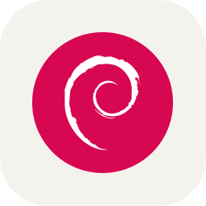

Hi 🧑💻, I'm RIDWANE EL FILALI
FRONT/BACK-END
DEVOLOPER.
I’m a Full-Stack Developer who loves building awesome apps
from start to finish.
Thanks to my training at 42,
About
My name is Ridwane El Filali, and I'm a passionate Full-Stack Developer. With my training from the 42 system, I've gained the skills to build complete, user-friendly applications from the ground up. I love solving problems and creating seamless digital experiences.
I’m all about bringing ideas to life with code. I enjoy turning complex challenges into simple, effective solutions, making technology work beautifully and efficiently for everyone.
I also share my journey and insights on Medium. From coding tips to tech experiences, my posts offer valuable information for developers and enthusiasts. Check out my blog to learn more!
Technologies


- 
Featured project
The ft_transcendence project at 42 is a major challenge that brings together everything we've learned. It's about building a complete web app using React for the front end, Django for the back end, and PostgreSQL for the database. This means we design a user-friendly interface with React, manage server-side logic with Django, and handle data storage with PostgreSQL. The project helps us become comfortable with the full stack of web development.
Tech stack
- React
- PostgreSQL
- django
- HTML
- CSS
Project Type
Full-Stack
Timeline
June 2024 - Present


Projects
Welcome to my project portfolio! Here you'll find a diverse collection of my work from the 42 system. These projects showcase a range of skills, from front-end and back-end development to algorithm design and system programming. Highlights include the ft_transcendence project, where I built a full-stack web application using React, Django, and PostgreSQL, demonstrating my ability to create complex, user-friendly applications from start to finish.
Ft_Transcendence

Ft_Transcendence
Ft_transcendence is the capstone project of the 42 system, challenging students to build a full-stack web application for playing ping pong online. Participants develop a web-based multiplayer game where users can compete against each other in real-time matches.
This project integrates front-end technologies like HTML, CSS, and JavaScript with back-end frameworks like Django and databases like PostgreSQL. By building ft_transcendence, students demonstrate their proficiency in full-stack web development and gain practical experience with building interactive, real-time applications.
WebsiteFt_Irc

Ft_Irc
Ft_irc is a networking project where students develop an Internet Relay Chat (IRC) server in C programming. Participants design and implement a server application that allows multiple users to connect, chat, and exchange messages in real-time.
This project involves socket programming, message parsing, and multi-threaded server architecture. By building ft_irc, students gain practical experience with network programming concepts and learn how to develop scalable, distributed systems.
WebsiteInception

Inception
Inception is an infrastructure project that introduces students to containerization and deployment using Docker. Participants create a Docker-based environment to host multiple services and applications, demonstrating containerization principles and deployment strategies.
This project covers topics such as Dockerfile creation, service orchestration, and container networking. By setting up a Docker environment, students gain hands-on experience with modern DevOps practices and learn how to deploy and manage containerized applications effectively.
WebsiteMinirt

Minirt
Minirt is a ray tracing project in the 42 curriculum that introduces students to computer graphics rendering techniques. Participants develop a ray tracer program capable of rendering 3D scenes with realistic lighting and shading effects.
This project covers fundamental concepts such as ray-object intersection, reflection, refraction, and shadow casting. By implementing minirt, students gain hands-on experience with ray tracing algorithms and deepen their understanding of computer graphics principles.
WebsiteMinishell

Minishell
Minishell is a project that challenges students to create a simple Unix shell in C programming. Participants develop a program that can parse and execute basic shell commands, providing a command-line interface similar to popular Unix shells like Bash.
This project involves parsing command-line input, executing external commands, and managing process execution in a Unix-like environment. By implementing minishell, students gain practical experience with system programming and command-line interface development, essential skills for Unix/Linux software development.
WebsiteFDF

FDF
FDF is a graphics project that tasks students with creating a wireframe representation of a 3D landscape from elevation data. Participants develop a program to parse input files containing height maps and render a 3D model using graphical primitives.
This project involves concepts such as 3D transformation, projection, and rendering in a graphical environment. By implementing FDF, students gain hands-on experience with computer graphics programming and deepen their understanding of spatial data visualization techniques.
WebsitePush_Swap

Push_Swap
Push_swap is a sorting algorithm project where students must develop an efficient algorithm to sort a stack of integers using a limited set of operations. Participants design algorithms to rearrange the stack with minimal operations, aiming to achieve optimal sorting performance.
This project challenges students to optimize their algorithms for both time and space complexity, fostering creativity and problem-solving skills. By mastering push_swap, students gain a deeper understanding of sorting algorithms and algorithmic optimization techniques, essential for tackling complex computational problems.
WebsitePipex

Pipex
Pipex is a project that tasks students with replicating the behavior of Unix pipes in C programming. Participants develop a program that can execute shell commands with input/output redirection, simulating the functionality of the '|' operator in Unix shells.
This project involves parsing command-line arguments, creating child processes, and managing file descriptors for inter-process communication. By implementing pipex, students deepen their understanding of process management and input/output redirection techniques in Unix-like operating systems.
WebsitePhilosophers

Philosophers
The philosophers project challenges students to explore concurrent programming concepts by simulating the classic dining philosophers problem. Participants implement a solution where multiple philosopher threads compete for limited resources (chopsticks) without causing deadlock or starvation.
This project delves into thread synchronization, mutual exclusion, and deadlock avoidance strategies. By tackling the philosophers problem, students gain valuable insights into parallel computing and concurrency control techniques, essential for developing robust, multi-threaded applications.
WebsiteBorn2beroot

Born2beroot
Born2beroot is a system administration project in the 42 curriculum that immerses students in the world of Linux server management. Participants are tasked with setting up and securing a virtual server environment, covering essential aspects such as user management, network configuration, and system monitoring.
Through hands-on experience with server administration tasks, students gain practical skills in maintaining and securing Linux-based systems. Born2beroot equips students with valuable knowledge and expertise in server management, preparing them for roles in IT and DevOps.
WebsitePrintf

Printf
The printf project is a fundamental exercise in implementing formatted output in C. Students are tasked with creating their version of the printf function, which includes parsing format specifiers, handling various data types, and printing formatted output to the console or a file.
This project dives deep into string manipulation, variable argument lists, and output formatting techniques. By mastering printf, students develop a strong understanding of string parsing and formatting conventions, essential skills for software development in C and related languages.
WebsiteGet_Next_Line

Get_Next_Line
In the get_next_line project, students tackle the challenge of reading a line from a file descriptor in C. This project delves into the intricacies of file handling and input/output operations in Unix-like environments.
By developing a function that efficiently reads lines from files, students gain valuable experience in handling file streams, memory management, and buffer manipulation. get_next_line is a crucial step in mastering file I/O in C programming and prepares students for more advanced system programming tasks.
WebsiteLibft

Libft
The libft project from the 42 system is all about building a custom C library with essential functions. It's a foundational project that challenges students to implement standard functions like string manipulation, memory allocation, and character handling from scratch.
By creating their own library, students gain a deep understanding of these fundamental concepts and enhance their programming skills. This project sets the stage for future projects, providing a solid toolkit for C programming endeavors.
WebsiteGet In Contact
I'd love to hear from you! Whether you have questions, project ideas, or just want to connect, feel free to reach out. Let's chat!
Send Email